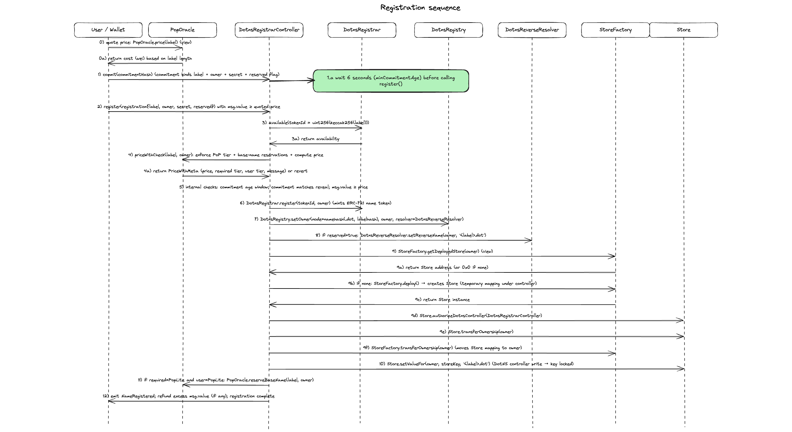

Dotns
Smart contracts for registering .dot names on Polkadot.
DotNS is a naming system for Polkadot. An account can register a .dot name, receive an ERC721 token that represents ownership of that name, attach records to it (addresses, text, content hashes, chat keys), and create subnames beneath it. Two independent issuance paths coexist on the same underlying registrar: a public commit-reveal path for anyone who wants a name, and a Proof-of-Personhood gateway path that issues lite-person and full-person usernames on behalf of verified users. Every piece of state the protocol surfaces is readable through public view functions on the chain itself, so a client needs only a node and a small set of well-known contract addresses to answer any question about the system.
Diagrams
Registration flow

Subnode creation flow

CID flow (Bulletin Chain)

System diagram

Deployment note
To deploy on Paseo, and to run fork tests, you need a local ETH-RPC adapter.
A docker-compose file is provided. It starts the ETH-RPC adapter pointed at the live Paseo Asset Hub endpoint. We route through the adapter rather than the public RPC directly because the adapter is more stable under the traffic pattern a deploy or fork test produces; the public endpoint rate-limits and occasionally stalls, which drops mid-flight transactions and invalidates fork-test state. Anvil is not in the picture here: forge test spins up its own in-process EVM for unit, fuzz, and invariant tests, and fork tests run against the adapter, not against a local Anvil chain.
Start the adapter, then run one of the deployment scripts from package.json:
# fresh deploy, proxied through the adapter to the local Paseo fork
bun run deploy:anvil
# fresh deploy, proxied through the adapter to live Paseo
bun run deploy:testnet
The fresh-deploy pipeline is split across five scripts under scripts/deploy/, each a separate forge script invocation:
DeployCore.s.sol: foundational name-ownership layer (store factory, registrar, reverse resolver, forward registry).DeployRecords.s.sol: per-name record layer (forward resolver, content resolver,PopRules).DeployPolicy.s.sol: commit-reveal controller and protocol registry.DeployPopSystem.s.sol: Proof-of-Personhood resolver and controller.WireDeployments.s.sol: authorisation and registry wire-up plus end-to-end verification. No proxy deploys.
Each stage writes the addresses it produces to a shared JSON manifest at deployments/<network>/<chainid>.json; the next stage reads prior addresses back through the same file. A single monolithic deploy script would accumulate quadratic EVM memory gas across every OpenZeppelin upgrade-safety validation the pipeline runs (the validator shells out to a Node CLI via vm.ffi and parses a multi-megabyte build-info JSON per proxy) and blow past the block gas limit around the eighth proxy. Running each stage as its own forge script process gives each OZ validation a fresh EVM simulation and keeps every check intact. scripts/deploy/run.sh chains the stages; package.json calls into it. Upgrade scripts for individual subsystems (for example scripts/deploy/SomeName.s.sol) live alongside and share the same shape.
Storage-collision checks are non-negotiable. On every upgrade path the OpenZeppelin validator diffs the new implementation's storage layout against a pinned reference contract and fails the build if a slot moves, shrinks, or changes type; a misaligned slot after an upgrade silently corrupts live state. The validator accepts the predecessor either as a compilable artefact in the same project (for example a FooOld.sol sibling) or as a stored referenceBuildInfoDir. We have chosen the source-file route deliberately: the snapshot is versioned alongside the implementation, reviewable in a diff, and available to forge build without any out-of-band fetch. A stored build-info directory would drift out of lockstep with the code reviewers read.
The Old.sol convention has a fixed shape. For a contract Foo.sol declaring contract Foo is ..., the snapshot file is FooOld.sol in the same directory, declaring contract FooOld is ... with the pre-upgrade storage layout, imports, inheritance list, and public surface copied verbatim at the moment the upgrade PR is opened. The only mechanical difference is the Old suffix on the file name, the contract name, and any sibling interface the snapshot depends on (for example IFoo.sol becomes IFooOld.sol). Upgrade scripts reference the snapshot through Options({referenceContract: "FooOld.sol:FooOld"}) on the matching Upgrades.upgradeProxy call.
Old.sol snapshots are PR-scoped and must never land on main. They exist only for the upgrade PR that introduces them, so CI and local forge build can diff the new layout against the pre-upgrade layout. Before the PR merges, every Old.sol (and every matching I*Old.sol) must be deleted, along with the referenceContract wiring in the upgrade script. Once the upgrade is live, the "old" layout is the on-chain deployment, not a file in the repository; keeping the snapshot around after merge would create a phantom contract that future diffs would treat as real code. Reviewers should refuse any PR that ships Old.sol files to main.
Fresh deploys have no prior layout to collide with, but we still run the same validator end-to-end because it also catches unsafe-upgrade-incompatible patterns (constructors, state-variable assignments and immutables in the implementation, selfdestruct, raw delegatecall, external library linking, missing initialisers, and so on) that would only surface as a bug the first time a future upgrade is attempted. No deploy or upgrade script in this repository passes unsafeSkipAllChecks or any unsafeAllow override, and adding one is not on the table. If validation fails, fix the contract, not the script.
Contracts
Two controllers sit on top of a single registrar and a single protocol registry. The registrar holds the ERC721 token per name; the registry holds the forward node => (owner, resolver) mapping and subname hierarchy; the resolvers hold per-name records; the protocol registry is the indirection layer through which every contract resolves its siblings at runtime. Controllers are the entry points: they mint names and drive the side effects. Neither controller imports the other. The layers underneath arbitrate collision handling: ERC721 uniqueness on the registrar, and a single reservation table on PopRules that both flows read through.
DotnsRegistrarController
Commit-reveal controller for the public registration path. A caller first submits a commitment hash, waits out the minimum commitment age, then reveals the registration parameters alongside the payment. The controller validates the commitment, routes price and eligibility through PopRules, and orchestrates every side effect of a successful registration: the mint on the registrar, the forward wire-up on the registry, the reverse record on the reverse resolver, the immutable Store write, and any refund owed on overpayment. Acceptable input is a single DNS label; governance-reserved labels are rejected at the pricing layer.
DotnsPopController
Dedicated controller for the Proof-of-Personhood gateway flow. Lives behind its own UUPS proxy with its own storage and is registered on the registrar via addController alongside the commit-reveal controller. Two entry points, both restricted to the address registered under POP_GATEWAY on the protocol registry.
The first, reserveBaseName, mints a lite-person username to a user. Lite labels are DNS labels with at least two trailing digits (for example alice42); the gateway strips any separator the pallet uses before calling so that the on-chain label is flat. The call also persists the user's chat key on the PoP resolver and optionally enqueues a reservation for a full-person base name the user intends to claim later.
The second, registerBaseName, mints a full-person username. Whether the call is a claim against a prior lite reservation or a fresh standalone registration is derived from on-chain reservation state; the caller does not choose. The link argument selects the chat-key source: inherit from a prior lite label, or accept a fresh one in the payload. When inheriting, the call also writes the liteLink (full => lite) and fullClaim (lite => full) records on the PoP resolver in the same transaction so downstream consumers can resolve either direction without scanning events.
Each base label carries a head/tail-indexed reservation queue with a capacity of MAX_RESERVATION_QUEUE and a governance-configurable reservationDuration. The queue head is mirrored into PopRules on every head transition (enqueue-from-empty, expiry-driven promotion, non-expiry head removal, claim-wipes-queue), so the public commit-reveal flow sees the same cross-flow lock through its existing PopRules price check. Expiry advancement is permissionless: anyone can call expireReservation to garbage-collect a stale head, which is what the pallet does on its own cadence.
DotnsRegistrar
ERC721-backed registrar that mints ownership of label IDs (labelhashes). Minting is restricted to every address in the controllers mapping; the mapping is owner-gated through addController and removeController. Every other contract in the system that needs to check "is this address authorised to drive name state?" consults this mapping rather than keeping a parallel list, which is what lets multiple controllers coexist on the same registrar without per-contract configuration changes.
DotnsRegistry
Forward registry mapping node to (owner, resolver) and supporting subnode creation. When a base name is minted on the registrar, the matching controller wires the node to the new owner through this registry. Privileged node wiring defers to the same controllers mapping on the registrar, so both controllers can write without the registry tracking controllers of its own.
Subnames are created by the base-name owner. A subname carries its own (owner, resolver) and can in turn carry subnames, so the registry is the place the name hierarchy actually lives.
PopRules
PoP-aware name classification and pricing. Classifies a label into one of four tiers: NoStatus (long labels with trailing digits, open to anyone), PopLite (short labels with trailing digits, requires lite-person verification), PopFull (labels without trailing digits, requires full-person verification), and Reserved (short labels governed by the protocol). The classification determines the price and the eligibility gate the commit-reveal controller enforces.
PopRules also holds the cross-flow reservation table for base names. Two write paths share one mapping keyed by the bare stem. The first, reserveBaseName, is called by the commit-reveal controller during a lite registration: it classifies the incoming label, strips the trailing digits, and writes the bare stem. The second, reserveBaseNameForPop, is called by the PoP controller on every reservation-queue head transition: it takes a bare stem directly and reverts when the slot is held by a different user, so the caller's local queue bookkeeping never silently diverges from the PopRules state.
Two read paths, priceWithCheck and priceWithoutCheck, are what the public flow consults. Both strip trailing digits before looking up the reservation, so any live entry on a bare stem blocks registrations of any variant under that stem for the reservation window (12 weeks by default).
DotnsReverseResolver
Reverse records mapping an address to its primary name. When a name is registered, the commit-reveal controller calls the reverse resolver to set the registrant's primary name. Writes are restricted to the addresses registered under CONTROLLER and REGISTRAR on the protocol registry (the commit-reveal controller and the registrar itself); rotating either is a single protocolRegistry.set call. Reads are open.
DotnsContentResolver
Stores contenthash and text records per node. This is where external content links (for example IPFS hashes) and arbitrary key-value text records (for example social handles, verification metadata) live. Writes require node ownership or an approved operator; reads are open.
DotnsResolver
Stores forward-resolution address records per node. This is the conventional "name to address" lookup: a client has a .dot name and wants to know the Ethereum address behind it. Writes require node ownership; reads are open.
DotnsPopResolver
Per-node resolver for records produced by the Proof-of-Personhood flow. Three record kinds. The chat key is ECDH public-key bytes keyed by node; it is written by the PoP controller during a lite reservation and during any claim path that inherits from a prior lite entry, and is what gives verified users an on-chain discovery channel for end-to-end encrypted messaging. The lite link answers "which lite username did this full name claim from?" and is keyed by the full-person node. The full claim is the reverse direction: it answers "which full name did this lite user claim?" and is keyed by the lite labelhash. The forward and reverse links are written by the same call, so they stay in lockstep; downstream consumers that look up by lite username (Nova's pallet, for one) resolve the full name without scanning events.
Writer authorisation is dynamic: the PoP controller address is fetched from the protocol registry on every write. Rotating the PoP controller is a single set call on the protocol registry with no resolver upgrade required.
DotnsProtocolRegistry
On-chain lookup table mapping well-known bytes32 keys (declared in DotnsConstants) to contract addresses. Every DotNS contract resolves its siblings through this registry at runtime.
Without it, each contract would store direct addresses to every contract it calls. An upgrade that changes one address would require calling updateX() on every contract that references it. With N contracts and M cross-references, that is M separate owner transactions per address change. The protocol registry reduces this to one: update the key in the registry, and every caller picks up the new address on its next call. The indirection also means a governance-driven rotation of, say, the PoP controller does not break any consumer that has already been deployed.
The registered keys include REGISTRAR, CONTROLLER, REGISTRY, REVERSE_RESOLVER, RESOLVER, CONTENT_RESOLVER, POP_RULES, STORE_FACTORY, POP_CONTROLLER, POP_RESOLVER, and POP_GATEWAY.
StoreFactory and Store
Per-user storage used to persist DotNS-written immutable records. Each account that has ever received a DotNS name gets a dedicated Store on first write; the factory deploys and tracks it. A Store entry, once written, is locked and cannot be overwritten, which is what gives registration records the durability callers expect. The Store invariant is labels only: registration records go here; every other per-name category (reverse, content, forward address, chat key, lite link) goes to a dedicated resolver.
Deployments
Paseo Asset Hub (chainId 420420417):
| Contract | Address |
|---|---|
| DotnsProtocolRegistry | 0xF8531342444fAC0A75719130eECcf45314584EFe |
| StoreFactory | 0x030296782F4d3046B080BcB017f01837561D9702 |
| DotnsRegistrar | 0x329aAA5b6bEa94E750b2dacBa74Bf41291E6c2BD |
| DotnsReverseResolver | 0x95D57363B491CF743970c640fe419541386ac8BF |
| DotnsRegistry | 0x4Da0d37aBe96C06ab19963F31ca2DC0412057a6f |
| DotnsContentResolver | 0x7756DF72CBc7f062e7403cD59e45fBc78bed1cD7 |
| DotnsResolver | 0x95645C7fD0fF38790647FE13F87Eb11c1DCc8514 |
| PopRules | 0x4e8920B1E69d0cEA9b23CBFC87A17Ee6fE02d2d3 |
| DotnsRegistrarController | 0xd09e0F1c1E6CE8Cf40df929ef4FC778629573651 |
| DotnsPopController | 0x33575240105e9E5fD623516A1a6bA8A8Ba6937BB |
| DotnsPopResolver | 0x86B83CA91f8BC2293E304EA7e026C0914c68C793 |
| POP_GATEWAY (EOA) | 0x4A519C30DA0EC16AA9a73c26EA6CA6F701CcE099 |
POP_GATEWAY is the privileged origin/proxy allowed to drive the PoP controller's lite/full-person flows. It is an EOA registered under the POP_GATEWAY key on the protocol registry, not a deployed contract. Currently set to the deployer as a placeholder; rotate to the production gateway with a single protocolRegistry.set(DotnsConstants.POP_GATEWAY, newAddr) call from the registry owner.
Mental model for new features
Treat the chain as the database. Assume no servers and no indexers. If a feature needs an offchain service to be usable, it is not a DotNS feature.
This has a practical implication: every feature must come with an explicit query path. A client should be able to start from a small set of known contracts and find everything it needs with a bounded number of calls. Every getter is external view; controllers and resolvers check authorisation on writes, never on reads; governance key rotation does not break existing read paths because consumers re-resolve their siblings through the protocol registry on every call.
Rules of thumb:
- State is the source of truth. Events are for observability.
- Discovery must be deterministic. If something is created, store where to find it.
- Avoid "scan and reconstruct". Do not require replaying logs from genesis to recover user state.
- Prefer simple keys.
node,labelhash,owner,commitmentshould be enough to locate related data. - If you need lists, make them enumerable onchain with pagination. Do not assume an indexer will build the list.
- If a rule matters for funds or correctness, enforce it onchain. Offchain checks are optional UX.
- If a new record belongs to a single name, it goes on a dedicated resolver, not on the Store. The Store stays labels only.
- A new cross-contract handshake must be expressible as a bounded sequence of view calls, and every step must be tested at the level where it lives: unit for a single-contract behaviour, fuzz for property coverage over random inputs, invariant for properties that must hold across random call sequences, and fork for live-state behaviour.
A quick checklist for a PR adding a feature:
- Where is the canonical state stored?
- From which known contract can a client discover it?
- What are the exact view functions needed to read it without scanning?
- How does a client list relevant items (if listing is required), and how is it paginated?
When to add a new controller
A controller is the policy layer that mints names and orchestrates the side effects of a registration. Add one when the issuance policy genuinely differs from every existing controller. Different authorisation (a gateway origin rather than a commit-reveal commitment), a different pricing or eligibility rule, a different set of records to write, or a different cross-contract coordination requirement all count. Do not add one when the difference is a flag on an existing flow; a flag means the existing controller grows a second reason to change, which is what the split is meant to prevent.
A new controller lives behind its own UUPS proxy with its own storage, and is registered on the registrar through addController. It must not import any other controller. Cross-flow collisions between controllers are arbitrated at the layers beneath them: ERC721 uniqueness on the registrar, and shared authority contracts like PopRules that both flows read through. Extending this means the new controller needs to think about which cross-flow authorities it writes to and how it keeps its local state in lockstep with them (the PoP controller's reservation queue mirrors its head into PopRules on every head transition for exactly this reason).
When to add a new resolver
A resolver is the storage layer for per-name records. Add one when a new record category exists that is semantically unrelated to what existing resolvers hold and that has its own authorisation model. An ECDH chat key is a different category from a contenthash, which is a different category from a forward address record; each lives on its own resolver because each has its own writer policy and its own read consumers.
Do not add a resolver for a record that already fits one of the existing categories; extend the existing resolver instead. And do not put user records on the Store: the Store is labels only, by invariant, and every other per-name category goes to a dedicated resolver. A resolver must not hold registration records, and the Store must not hold anything but registration records. Keeping that boundary sharp is what makes the system legible.
Every resolver must spell out its writer policy on its interface and its read surface. Writes are gated; reads are always open. Two gate patterns exist in the system today and picking the right one matters. When the record is owned by the end user (forward address records, content hashes, text records), gate on node ownership: the resolver calls back into DotnsRegistry.owner(node) on every write, so transferring the name transfers write permission automatically with no resolver upgrade. When the record is owned by a protocol-level writer (reverse records, PoP-flow records), gate on the writer address fetched from the protocol registry on every call: the resolver reads something like POP_CONTROLLER or CONTROLLER off the registry per write, so rotating the writer is a single protocolRegistry.set call with no resolver upgrade. Do not store the writer address on the resolver itself.
When to extend something existing instead
Most features fit an existing contract and extending it is the right move. A new text record goes on the content resolver. A new view function on an existing registry adds to that registry. A new validation rule on registration modifies the commit-reveal controller. Adding a new controller or resolver solves a different problem: a responsibility that does not yet have a home. If you cannot cite the new responsibility in a sentence, you are extending, not adding.
Example query paths. Each row starts from a small set of known contracts; every hop is a public view call, so any node can resolve the path without special access.
| Lookup | Path |
|---|---|
| Lite labelhash => full-person node | Protocol registry => PoP resolver => fullClaim(liteLabelhash) |
| Full-person node => lite labelhash | Protocol registry => PoP resolver => liteLink(fullNode) |
| Node => chat key | Protocol registry => PoP resolver => chatKey(node) |
| Node or tokenId => registered label | Protocol registry => registrar => labelOf(uint256(node)) |
| Base stem => gateway-reservation state | Protocol registry => PoP controller => isReservedForClaim(baseLabel) |
| Base stem => cross-flow reservation state | Protocol registry => PopRules => isBaseNameReserved(baseLabel) |
| Node => ERC721 owner | Protocol registry => registrar => ownerOf(uint256(node)) |
| Subnode => forward-registry owner | Protocol registry => registry => owner(subnode) |
| Node => forward address record | Protocol registry => forward resolver => address record |
| Address => primary name | Protocol registry => reverse resolver => primary name |
Build
forge build
Test
forge clean
forge test
Fork tests are upgrade-PR scoped: they live in test/fork/ for the duration of an upgrade PR (paired 1:1 with the upgrade script under scripts/deploy/), run against a local Paseo Asset Hub fork via the ETH-RPC adapter described in the deployment note, and are deleted alongside the upgrade script and the matching Old.sol snapshots before merge. Between upgrade PRs the directory is empty and there is nothing to skip; while a fork test is in flight, skip it with:
forge test --no-match-path 'test/fork/**'